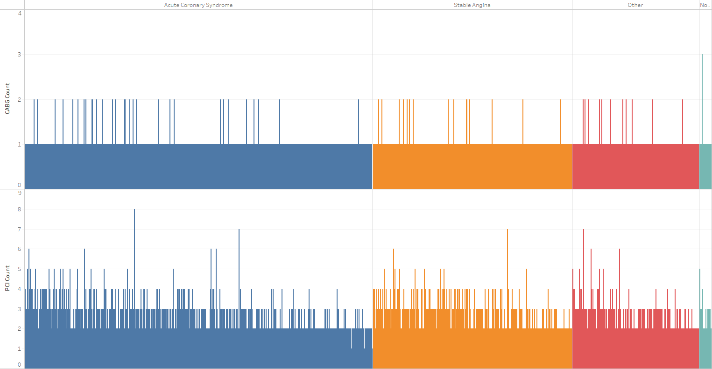

I wanted to explore the data concerning their "indication for catheterization", which refers to the reason (what condition they have) for the patient's cardiac catheterization -- a procedure used to diagnose and treat cardiovascular conditions. In the dataset there were four possible indications for a patient's catheterization file:
- acute coronary syndrome: an umbrella term for situations where the blood supplied to the heart muscle is suddenly blocked [1]
- stable angina (also known as angina pectoris): chest pain or discomfort due to coronary heart disease[2], which is a term for the buildup of plaque in the heart's arteries which can lead to heart attack[3]
- other
- the indication is unknown/not entered
Of the four, only two of them are actually a cardiovascular condition; other may indicate a condition that doesn't fall into the previous two categories but is still a known condition.
To answer my question I looked at the record counts of these conditions and viewed them by sex and year, separately.
These graphs are pretty straightforward and were made by graphing the catheterization indication and sex/year data against the count of number of records. There were no rows that contained null values for these attributes.

This bar graph shows the total count of files over all the years recorded in the dataset for condition.
This line graph shows the total (both sexes together) record count of the different conditions from 2008 to 2016. Noticeable peaks and dips are shown too.
The black lines are the actual counts, the red dotted lines are polynomial (degree 2) trendlines.
Acute coronary syndrome clearly has the highest number of patients for both sexes
There are consistently less females with these conditions, roughly 1:2 female-to-male ratio in every category
In the line graph I've pointed out a few interesting peaks and dips in the record counts.
- The amount of patients with acute coronary heart syndrome rose in 2013, only to dip down again the next year, and then rise once more in 2015
- There's a noticeable dip in patients with stable angina in 2012, and then it rises by almost 500 patients in 2014
- In 2013, the number of patients with 'other' conditions dipped by about 100, only to rise over the next two years by almost 900 patients
- The highest count of unknown/not entered data for patients' conditions was in 2012
Here's the line chart showing the general trends of catheterization indications over the years again (but bigger).

In general there's a positive trend for number of patients over the years for each condition
Some fluctuation in number of patients between 2012-2015 for all categories
Data has fairly flat slope from 2015-2016 for all categories
The r-squared and p-values for the trendlines (trimmed to 4 decimal places, not rounded):
| Condition |
R-squared |
p-value |
| Acute Coronary Syndrome |
0.8146 |
0.0006 |
| Stable Angina |
0.5789 |
0.0746 |
| Other |
0.9287 |
0.0003 |
| Not Entered/Unknown |
0.6475 |
0.0438 |
Note:
R-squared is a measure from 0 to 1 of how close the data is to the fitted trendline; higher is better.
P-value is the probability that the equation for the trendline was a result of random chance; lower is better (≤ 0.05 is pretty good).
I first tried linear trendlines and those represented most of the data pretty well. 'Stable Angina' wasn't great (R-squared = 0.3666, p-value = 0.0839), the dip in 2012 is probably contributing to that. The 'Unknown' category didn't do well with a linear trendline -- since it looks like a hump its linear trendline looked pretty flat, and so did an abysmal job representing the data (R-squared = 0.0788, p-value = 0.4641).
In the end I switched to a polynomial representation of the trends and the trendline for the 'Unknown' category improved; the representation for the other categories also improved slightly. 'Stable Angina' still doesn't have as good scores as the others but it's better than it was with a linear trendline.
I also went a little deeper and plotted the same line graph but partitioned the data by male and female, so you can see the trends in better detail.
The timelines for patient count now show only males or females. What you saw in the previous line graph was pretty much the sum of these line charts for each category.
These trendlines are also polynomial (degree 2).
Interestingly, the proportional of the line charts is (mostly) similar to the height of the bar charts
Distance is not the same because the scales are different
Trends are still generally positive, the pattern for unknown data is pretty similar for both sexes
If you have trouble seeing the trendlines, I've got them isolated below.

R-squared and p-values for the trendlines (trimmed to 4 decimal places, not rounded):
| Indication |
Sex |
R-squared |
p-value |
| Acute Coronary Syndrome |
Female |
0.7602 |
0.0137 |
| Male |
0.5955 |
0.0661 |
| Stable Angina |
Female |
0.6407 |
0.0463 |
| Male |
0.4125 |
0.2027 |
| Other |
Female |
0.8233 |
0.0055 |
| Male |
0.9556 |
< 0.0001 |
| Not Entered/Unknown |
Female |
0.8185 |
0.0059 |
| Male |
0.5430 |
0.0953 |
The slope for trends in females looks slightly less pronounced (looks 'flatter') in all categories
The trendlines for unknown data [males] and 'Stable Angina' [males] aren't so good at representing their data (both have R-squared < 0.55 -- it only represents about 55% of the data?!) and the line for stable angina [males] has a p-value of 0.2 (!!) so there's a 20% chance the line generated was random. This could be because the variation in data count is much bigger for males (more and steeper hills and valleys). I wanted to keep the calculation for these consistent with the previously calculated trendlines though.
(The trendline for 'other' conditions [males] is really good!)
I wanted to see if the condition the patient had affected how many procedures they went through.
We already know what a catheterization is, but what are the other procedures?
- percutaneous coronary intervention (PCI): a non-surgical procedure used to treat narrowing of the coronary arteries of the heart found in coronary artery disease[4]
- used in people with acute myocardial infarction (heart attack), unstable angina, and stable angina[4]
- is an alternative to CABG
- coronary artery bypass surgery (CABG): a surgical procedure to restore normal bloodflow to an obstructed coronary artery[5]
- often for when coronary arteries have a 50 to 99% obstruction[5]
Since PCIs are often used in lieu of CABGs, we'd expect more patients to have more PCIs in this dataset.
These next visuals only look at patients who had a catheterization file (some patients only appear to have a PCI or CABG file but no catheterization file, so I left them out for this analysis). To make the graphs I counted the number of occurrences for each patient's file number in the PCI and CABG records and recorded them in a new column (one for each procedure).

This graph shows the total number of procedures that were recorded for each condition in the data.
Patients who had a catheterization file definitely mostly had PCIs as opposed to CABGs
Most PCIs recorded were for patients with acute coronary syndrome
